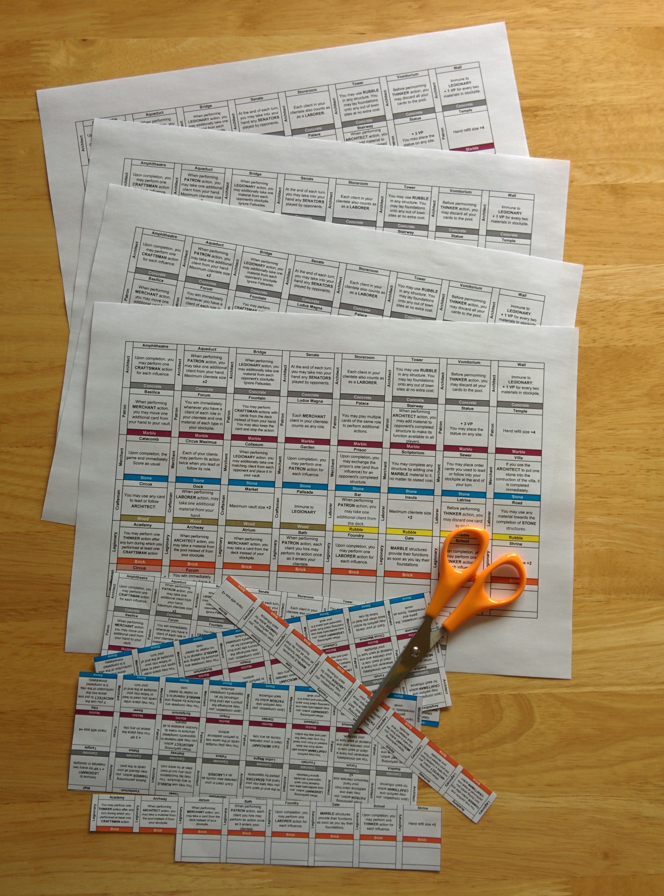

It all started with me buying a copy of Mottainai. That game just blew me away but I have now played Mottainai enough times to start wanting for more. To be more exact, its big brother Glory to Rome caught my eye. However, after doing some research I came up to a problem and it is probably already obvious which one.
It is not a secret anymore that Glory to Rome, whether it is the original edition or the Black Box edition is really hard to get your hands on, especially, if you are unwilling to pay £200 or in the whereabouts. However, as I found out, there are still some things you can do to get around this.
Here are the commonly known ways of getting GtR that do not involve spending 200 pounds:
Create your own copy of GtR. Unfortunately, the problem with this is that you need to be a somewhat experienced graphic designer or, at the very least, even if you manage to find a half decent quality card scans online, you still need to figure out how to print them. And of course, from what I have read and seen, at least in the UK, for a batch of 200 custom cards the printing is going to be about £40.
Get a non English copy of Glory to Rome. In fact, as it turns out, not all the copies of GtR are sold out. If you look into the German, French, Italian, Polish, Hungarian or Spanish markets you can actually get a copy of the 2011 edition (also knows as the White Box edition). If you are from one of those countries you can stop reading here and just go and get yourself a copy of this game. However, if you are like me, an english speaking person, you need to learn the language and then worst of all make all your friends that you want to play with learn that foreign language too. That’s a problem!
Here is my solution how combining a bit of creativity and patience (and £30 of course), you can be playing Glorty to Rome in no time at all with your english speaking friends.
I got mine in French as it is the language I speak the most out of the list above. All I did is go to the french Amazon, typed in “Gloire de Rome” and just ordered the cheapest copy I could find. Mine cost 18.20 euros plus 9 euros shipping fee as I do not live in France.
Excel document can be found here: Cards_1.0.xlsx
I have spent some time making a table listing all the cards and their special powers to match the ones in my french Glory to Rome. The translation was mostly copied from the Black Box Edition scans I found on BGG. However I did change some things to adhere better to the french edition I have. For instance in this edition the “Jack” card is called “Senator” so I have translated accordingly.
or you can find the original image here: https://boardgamegeek.com/image/1206229/glory-rome
It can be found here: https://boardgamegeek.com/filepage/78587/blackbox-edition-rulebook-pdf
Note that that not everything needs to be cut, some cards in the deck are only 3 of the same some others are 6. You can find more details on the exact number of cards contained in the deck either in the rulebook or in the card list by BGG user batdog.

I have measured the cards in the french Glory to Rome by Filosofia edition to be exactly 59x91.5mm. And I was gladly surprised to have an exact match online for these cards online. I got the “ULTIMATE GUARD Supreme Sleeves for Board Game Cards Standard American (60)” which are exactly 59x91.5mm in size as it says on the pack. However, beware! From what I had the misfortune to learn the numbers of the sleeves do not represent the size of the cards they fit, but they represent the actual size of the sleeves. So unfortunately the sleeves I got turned out to be slightly smaller than I wanted them to be. I still managed to fit the cards in, however, the fit is way too tight and not ideal at all. I highly recommend getting some larger sleeves. Sleeve size you need to get may also depend on the version of the game that you buy.
For me this was the most painful part of the whole project. I have probably spent about 2h doing this. This was mostly due to me getting the wrong size sleeves. As you can see from the picture I did not make translations for the “Jacks” nor for the foundations. I think that they are obvious enough, however, feel free to translate those as well if you feel the need to.
So overall, I managed to get a playable copy of Glory to Rome in English for a total of about 30 pounds (18.20€ game, 9€ shipping, 8£ card sleeves). Of course for players that are really fussy about their games and definitely have to get a proper version of the game in english this is not going to work as a solution. But for every else one who don't care too much about the looks as long as the game is playable, I would say this is a pretty good deal.